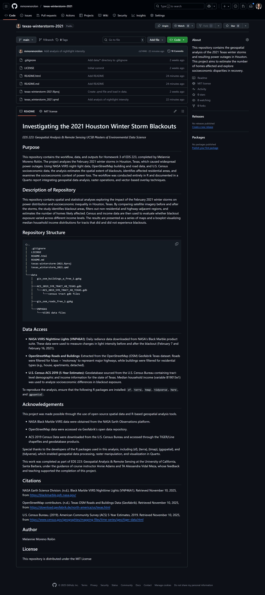
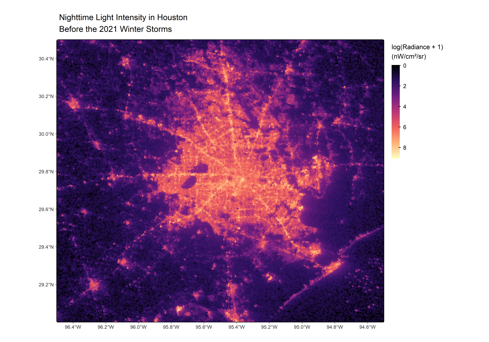
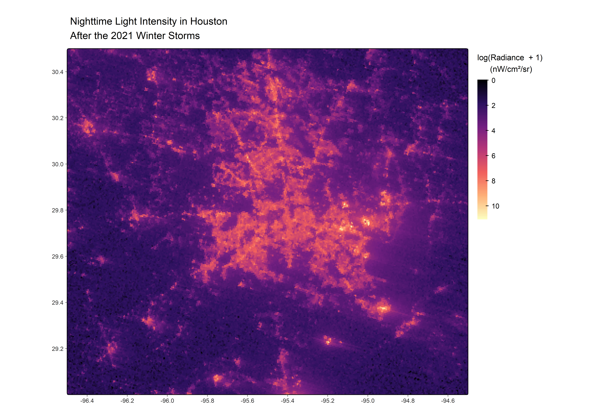
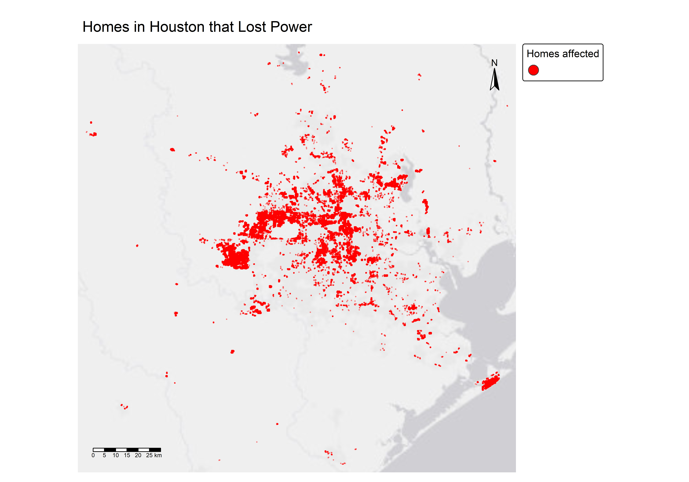
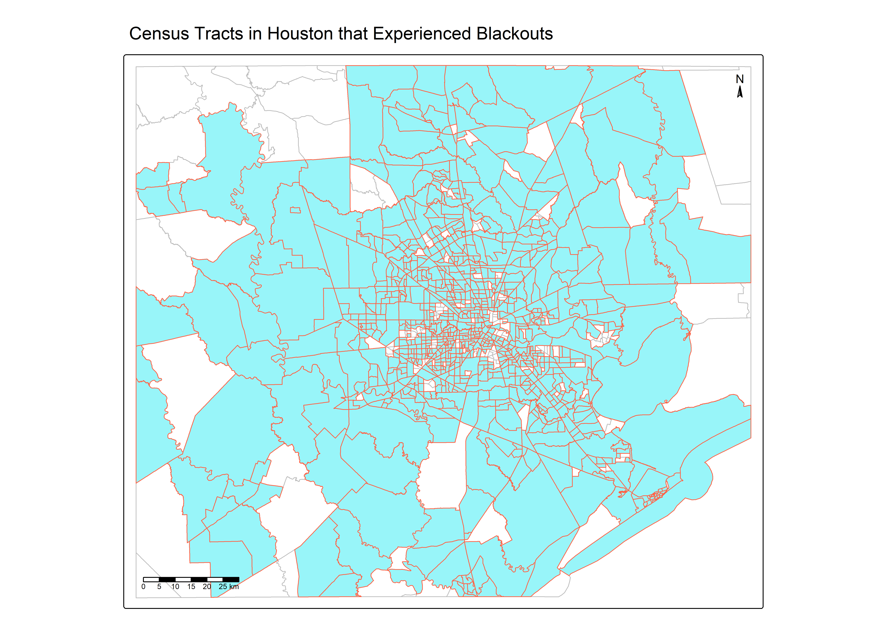

# Import libraries
library(tidyverse)
library(tmap)
library(terra)
library(sf)
library(ggspatial)
library(here)A Look at Houston’s Winter Storm Blackouts
0.0.1 README Preview
The following image shows a preview of the project’s README file hosted on GitHub:

0.1 Introduction
Rapid changes in climate are leading to higher intensity and more frequent extreme weather events in recent years. If we look at the United States, there are many examples. One particular event that highlights this increasing pattern in weather events are the February 2021 winter storms in Houston, Texas. For the first time in years, Houston experienced a power outage of massive scale. A combination of extreme weather, grid isolation, and lack of winterization became the perfect storm that exposed Houston’s underlying systemic issues.
This analysis aims to estimate the number of households in the Houston metropolitan area that resulted in loss of electricity service due to the extreme winter storms experienced in February 2021.
1 Methods
Key steps of this analysis include:
- Find locations that experienced a blackout
- Exclude highways from analysis
- Identify homes that experienced blackouts by combining the locations of homes and blackouts
- Identify the census tracts likely impacted by blackout
2 Data Analysis
2.0.1 Import Socioeconomic Data
#|echo: false
#|label: census-data
# Load 2019 socioeconomic census tract data
census_tracts <- st_read(here::here("data", "ACS_2019_5YR_TRACT_48_TEXAS.gdb"),
layer = "ACS_2019_5YR_TRACT_48_TEXAS", quiet = T)
# Load household income data
income <- st_read(here::here("data", "ACS_2019_5YR_TRACT_48_TEXAS.gdb"),
layer = "X19_INCOME", quiet = T)2.0.2 Import Roads and Homes Data
#|label: rds-bldgs-data
# Load roads data
roads <- st_read(here::here("data", "gis_osm_roads_free_1.gpkg"),
query = "SELECT * FROM gis_osm_roads_free_1 WHERE fclass='motorway'", quiet = T)
# Load houses data
buildings <- st_read(here::here("data","gis_osm_buildings_a_free_1.gpkg"),
query = "SELECT * FROM gis_osm_buildings_a_free_1 WHERE (type IS NULL AND name IS NULL) OR type IN ('residential', 'apartments', 'house', 'static_caravan', 'detached')", quiet = T)2.0.3 Import Satellite Images
#|label: raster-data
# February 7 tiles
tile_0701 <- rast(here::here("data", "VNP46A1",
"VNP46A1.A2021038.h08v05.001.2021039064328.tif"))
tile_0702 <- rast(here::here("data","VNP46A1",
"VNP46A1.A2021038.h08v06.001.2021039064329.tif"))
# February 16 tiles
tile_1601 <- rast(here::here("data", "VNP46A1", "VNP46A1.A2021047.h08v05.001.2021048091106.tif"))
tile_1602 <- rast(here::here("data", "VNP46A1",
"VNP46A1.A2021047.h08v06.001.2021048091105.tif"))2.0.4 Blackout Detection
Find locations that experienced a blackout.
#|label: merge-rasters
# Set the extent to Houston to later plot radiance before and after winter storms
houston_ext <- terra::ext(c(-96.5, -94.5, 29, 30.5))
# Merge raster objects
r_before <- terra::mosaic(tile_0701, tile_0702, fun = "mean") %>%
crop(houston_ext)
r_after <- terra::mosaic(tile_1601, tile_1602, fun = "mean") %>%
crop(houston_ext)
#Apply log transformation (log1p) to reduce skew from bright outliers
# and enhance contrast in low-light areas
r_before_log <- log1p(r_before)
r_after_log <- log1p(r_after)#|label: light-diff
# Compute the change in light intensity
r_change <- r_before - r_after# Create a re-classification matrix
reclass_matrix <- matrix(c(-Inf, 200, NA, # values below 200 → NA
200, Inf, 1), # values above 200 → 1
ncol = 3,
byrow = TRUE)
# Reclassify the raster
masked_difference <- classify(r_change, reclass_matrix)
# Convert raster mask to polygons (vectorized blackout)
blackout_vector <- st_as_sf(as.polygons(masked_difference))
blackout_vector <- st_make_valid(blackout_vector)#|label: polygon-check
# Check that `blackout_vector` is a polygon
sum(!st_is_valid(blackout_vector))[1] 0# Define the bounding box coordinates for Houston, Texas
houston_bbox <- st_as_sfc(st_bbox(c(xmin = -96.5, xmax = -94.5,
ymin = 29, ymax = 30.5),
crs = st_crs(blackout_vector))
)
# Crop the vectorized blackout polygons with the Houston bounding box
cropped_blackout <- st_crop(blackout_vector, houston_bbox) %>% st_make_valid()
# Reproject the cropped blackout vector to EPSG:3083 (Texas Centric Albers Equal Area)
cropped_blackout <- st_transform(cropped_blackout, 3083)2.0.5 Spatial Filtering
Exclude highways from the cropped blackout mask.
# Check CRS match between highways and blackout polygons
if (st_crs(roads) != st_crs(cropped_blackout)) {
message("Transforming highways to match cropped_blackout CRS...")
roads <- st_transform(roads, st_crs(cropped_blackout))
}
if (st_crs(roads) == st_crs(cropped_blackout)) {
message("CRS matches.")
} else {
message("CRS still doesn't match.")
}# Create a buffer of 200 meters
buffered_highways <- st_buffer(roads, dist = 200)
# Combine geometries
highways_200m <- st_union(buffered_highways)
# Erase overlapping areas to remove highways
blackout_not_highway <- st_difference(cropped_blackout, highways_200m)
# Fix invalid geometries if necessary
if (sum(!st_is_valid(blackout_not_highway)) > 0) {
blackout_not_highway <- st_make_valid(blackout_not_highway)
}2.0.6 Socioeconomic Context
Identify the number of homes likely impacted by blackouts.
if (st_crs(buildings) != st_crs(blackout_not_highway)) {
message("Transforming buildings to match blackout CRS...")
buildings <- st_transform(buildings, st_crs(blackout_not_highway))
}
if (st_crs(buildings) == st_crs(blackout_not_highway)) {
message("CRS matches!")
} else {
message("CRS still doesn't match." )
}# Find the intersection of homes within Houston that experienced a blackout
buildings_affected <- st_intersection(buildings, blackout_not_highway)
if (sum(!st_is_valid(buildings_affected)) > 0) {
buildings_affected <- st_make_valid(buildings_affected)
}#|label: num-affected
# Find the number of homes affected by the blackout
num_affected <- nrow(buildings_affected)The number of homes likely impacted by the winter storms in February 2021 are approximately 157411.
2.0.7 Compare the distributions of household income that experienced and did not experience a blackout
# Clean the income dataset
income_clean <- income %>%
# Remove geometries (there is not but just in case)
st_drop_geometry() %>%
# Remove last 10 characters so that they match with
#the census tract's GEOID value format
mutate(GEOID = substr(GEOID, nchar(GEOID) - 10, nchar(GEOID))) %>%
select(GEOID, MEDIAN_HH_INC = B19013e1)
# Join income and census tract data
census_income <- left_join(census_tracts, income_clean, by = "GEOID")
# Check CRS match
if (st_crs(blackout_not_highway) != st_crs(census_income)) {
warning("CRS does not match")
message("Transforming CRS to match...")
census_income <- st_transform(census_income, st_crs(blackout_not_highway))
}
# Identify which census tracts intersect blackout areas
census_blackout <- census_income[st_intersects(census_income, blackout_not_highway, sparse = FALSE), ]
# Add blackout status column
census_income <- census_income %>%
# Add a new column 'blackout' to indicate whether each census tract's
# GEOID appears in the list of tracts that intersect blackout areas
# (Yes = experienced blackout, No = did not)
mutate(blackout = ifelse(GEOID %in% census_blackout$GEOID, "Yes", "No"))2.1 Results
2.1.1 Nightlights before and after the winterstorms
#|label: vis1-nightlights
# Night lights before storm
map_before <- tm_shape(r_before_log) +
tm_raster(col.legend = tm_legend(title = "log(Radiance + 1) \n(nW/cm²/sr)",
title.size = 0.8,
frame = FALSE,
orientation = "portrait"),
col.scale = tm_scale_continuous(values = "magma")) +
tm_title(size = 1, text = "Nighttime Light Intensity in Houston \nBefore the 2021 Winter Storms") +
tm_graticules(lines = FALSE, labels.show = TRUE) +
tmap_options(component.autoscale = FALSE)
# Night lights after storm
map_after <- tm_shape(r_after_log) +
tm_raster(col.legend = tm_legend(title = "log(Radiance + 1) \n(nW/cm²/sr)",
title.size = 0.8,
frame = FALSE,
orientation = "portrait",
title.align = TRUE),
col.scale = tm_scale_continuous(values = "magma")) +
tm_title(size = 1, text = "Nighttime Light Intensity in Houston \nAfter the 2021 Winter Storms") +
tm_grid(lines = FALSE, labels.show = TRUE) +
tmap_options(component.autoscale = FALSE)
map_before
map_after
Figure 1. Comparison of nightlight intensity across Houston before (February 7, 2021) and after (February 16, 2021) the winter storm.
Lighter areas indicate higher radiance values, while darker areas represent reduced light intensity, likely due to power outages during the blackout.
2.1.2 Homes in Houston that lost power
# Convert polygons to points for clearer display
buildings_points <- st_centroid(buildings_affected) %>%
select(geometry = geom)
# Plot the homes that experienced a blackout
tm_shape(buildings_points) +
tm_dots(col = NA, # no borders
fill = "red", # buildings affected point color
size = 0.1,
fill_alpha = 0.3,
fill.legend = tm_legend(title = "Homes affected")) +
tm_basemap("Esri.WorldGrayCanvas") +
tm_add_legend(type = "symbols",# Add a point symbol in the legend
fill = "red",
title = "Homes affected") +
tm_layout(frame = FALSE,
legend.outside = TRUE) +
tm_title(text = "Homes in Houston that Lost Power") +
tm_compass(type = "arrow", position = tm_pos_in("right", "top")) +
tm_scalebar(position = tm_pos_in("left", "bottom"))
Figure 2. Residential structures within Houston that likely lost power during the February 2021 blackout.
Grey areas represent detected blackout zones (excluding highways) and red points indicate the locations of affected residential buildings.
2.2 Census tracts that lost power after the storms
# Match CRS
blackout_not_highway <- st_transform(blackout_not_highway, st_crs(census_tracts))
if (st_crs(blackout_not_highway) == st_crs(census_income)) {
message("CRS matches!")
} else {
message("CRS still doesn't match." )
}
# Define the Houston bounding box (same extent you used before)
houston_bbox <- st_as_sfc(st_bbox(c(xmin = -96.5, xmax = -94.5,
ymin = 29, ymax = 30.5),
crs = 4326)) %>%
st_transform(st_crs(census_tracts))
# Crop the census tracts to the Houston area
census_houston <- st_crop(census_tracts, houston_bbox)
# Identify census tracts in Houston that intersect blackout areas
houston_blackout <- census_houston[st_intersects(census_houston, blackout_not_highway, sparse = FALSE), ]
# Add "blackout" column and mark tracts as Yes/No based on intersection
census_houston <- census_houston %>%
mutate(blackout = ifelse(GEOID %in%
houston_blackout$GEOID, "Yes", "No"))
# Map census tracts in Houston that experienced blackouts
tm_shape(census_houston) +
tm_borders(col = "gray", lwd = 0.8) +
tm_shape(houston_blackout) +
tm_polygons(col = "tomato", fill = "#98F5F9", lwd = 0.8) +
tm_compass(type = "arrow", position = c("right", "top"), size = 0.8) +
tm_scalebar(position = c("left", "bottom")) +
tm_title(text = "Census Tracts in Houston that Experienced Blackouts",
position = tm_pos_out("center","top"),
size = 1.2,
frame = FALSE) +
tmap_options(component.autoscale = FALSE)
Figure 3. Census tracts within the Houston metropolitan area that experienced blackouts following the winter storm.
Turquoise tracts denote areas that overlapped with the detected blackout mask, while lighter tracts did not show evidence of power loss.
2.3 Compare the distributions of median household income for census tracts that did and did not experience blackouts
#|label: vis4-hh-income
# Plot boxplot of median household income distribution by blackout experience
ggplot(data = census_income %>% filter(!is.na(MEDIAN_HH_INC)),
aes(x = blackout, y = MEDIAN_HH_INC, fill = blackout)) +
geom_boxplot(alpha = 0.8, outlier.color = "black") +
scale_fill_manual(values = c("grey80", "firebrick4")) +
# Add labels to x- and y-axis
labs(title = "Median Household Income by Blackout Experience",
x = "Blackout Experienced",
y = "Median Household Income (USD)") +
theme_classic(base_size = 14) +
theme(legend.position = "none",
plot.title = element_text(hjust = 0.5, face = "bold"))
Figure 4. Distribution of median household income for census tracts that did and did not experience blackouts.
While blackout-affected tracts occurred across all income levels, slightly higher variability is observed in higher-income tracts. Further analysis is recommended to determine if this difference is significant.
3 Discussion
This analysis estimated the spatial extent of Houston’s February 2021 winter storm blackouts by combining satellite night-light data, road networks, and census information. The results suggest that thousands of residential structures across diverse neighborhoods lost power, with outages distributed across both lower- and middle-income census tracts. While the data reveal clear spatial clustering of blackouts, several limitations remain. The night-light data provide an indirect proxy for outages and may underestimate impacts in densely developed or industrial areas. Additionally, variations in data resolution, cloud cover, and temporal mismatches between datasets introduce uncertainty in the estimated extent of power loss.